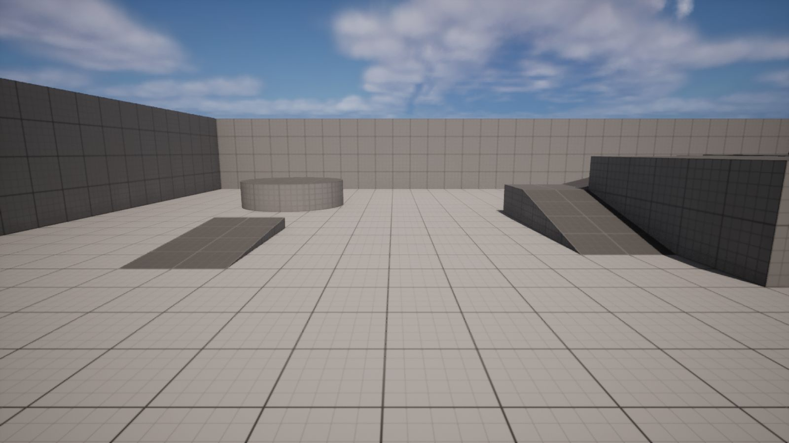
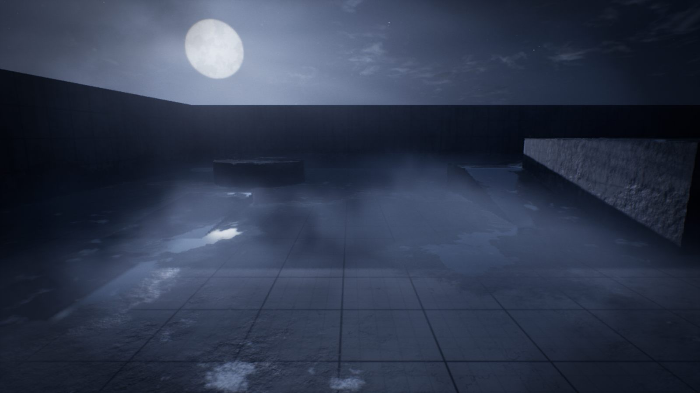
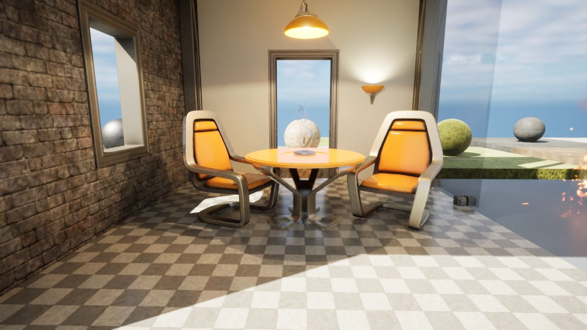
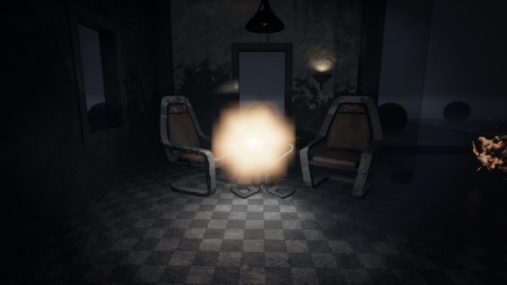

The 14 moods
Each mood is a complete world. Sky, light, fog, surfaces, air and camera change together, and moods blend into each other in under a second.
On this page
Every mood
Click a card to see it large. Switch between the Mood Lab corridor and an open level, and hold the button to see the same view with no mood. The arrow keys move between moods.
Works on your level
Moods are made for any level: a finished environment, a blockout, or an empty level with nothing but a floor. Drag across each picture to compare.


OriginalMoonlit Exposure

OriginalSealed DarkWhat a mood is made of
- Sky. A moon or sun, stars and moving clouds, all from one material that lights your level. Some moods bring a black sun, a huge red moon or a sky that glows after sunset.
- Light. The sun or moon, the soft light from the sky, your level's lamps, pools of light the mood adds where a level has none, and a torch or glow the player carries.
- Fog. Height fog that hides the distance, and banks of fog that roll along the floor and catch every light.
- Surfaces. Dirt, stains, rust, damp walls, soot, wet floors and puddles on every surface. No mesh or material in your level is touched.
- Air. Dust and rising embers from the mood. Rain, snow and ash come from its weather.
- Camera. Film curves, grain, dark edges, lens dirt around lights, heat shimmer and old tape.
The first click
The first mood you click after opening the project can take up to a minute to look right, because Unreal prepares its materials. You may see a grey or plain picture during that time. It only happens once.
All moods at a glance
| Mood | Weather | Summary |
|---|---|---|
| Sealed DarkDA_SealedDark | Clear | No light but what you carry. Heavy, wet air. |
| Failing PowerDA_FailingPower | Clear | Weak, sick lamps stutter and die one by one. |
| Blind FogDA_BlindFog | Light Ash | Pale fog swallows the world, and ash drifts down in it. |
| Moonlit ExposureDA_MoonlitExposure | Clear | A cold moon, wet ground and shadows of unseen branches. |
| Bright WrongDA_BrightWrong | Clear | Bleached daylight under a black sun. Too bright, too quiet. |
| Red AlertDA_RedAlert | Clear | Emergency beacons sweep red light through thick air. |
| Last CandleDA_LastCandle | Clear | One small flame, and a dark that goes on forever. |
| Toxic HazeDA_ToxicHaze | Clear | Sick yellow-green gas rolls along the ground. |
| Blood MoonDA_BloodMoon | Clear | A huge red moon, and everything under it looks wrong. |
| Ash FallDA_AshFall | Ash | A burnt sun through smoke. Ash falls, embers rise. |
| DrownedDA_Drowned | Rain | Cold rain hammers standing water. Everything is soaked. |
| Found FootageDA_FoundFootage | Clear | An old camcorder, its weak light and damaged tape. |
| Liminal HumDA_LiminalHum | Clear | Flat yellow light, stained floors, and nobody here. |
| Long DuskDA_LongDusk | Clear | The sun is gone but the last light stays, cold and orange. |
Use a mood in your game
- In the editor: click a card, then Apply to Level. See Apply and play.
- From a Blueprint: the Set Mood node, with Blend Seconds to fade. See Blueprint nodes.
- When the player walks somewhere: a Mood Zone or a Mood Event. See Mood Events and zones.